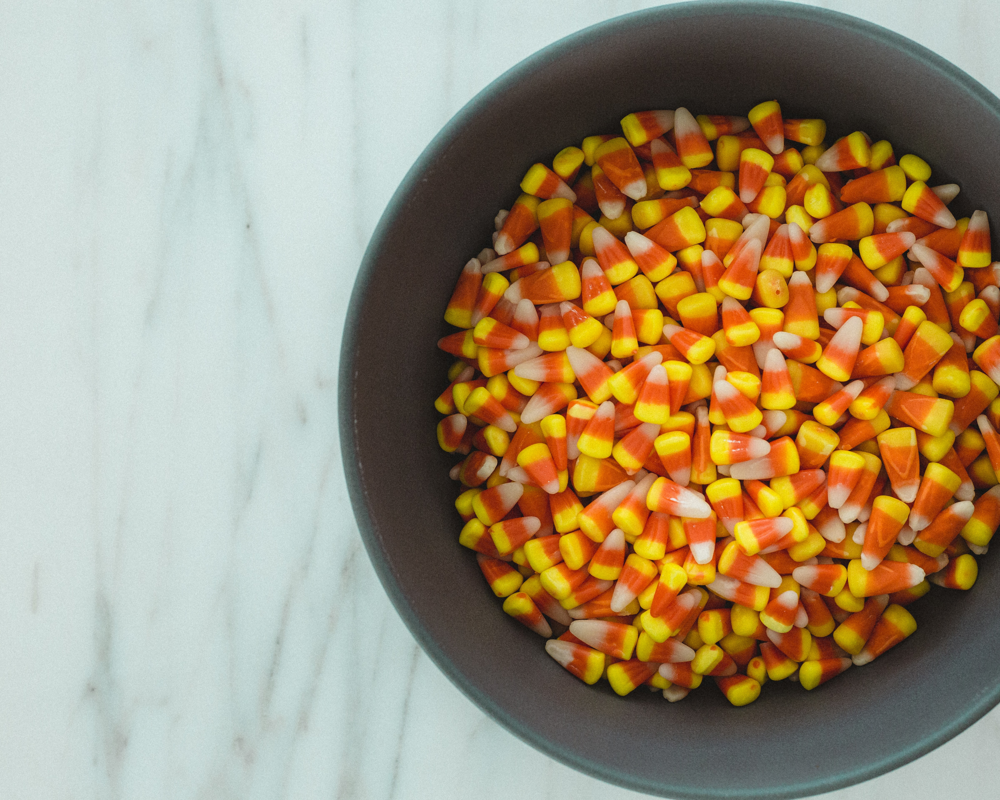

Happy Halloween

VIRAL TIKTOK GHOST PHOTOSHOOT TREND
With over 14.8 million views on TikTok already, the
#GhostPhotoshoot trend is certainly one of the
biggest challenges of September as TikTok users
have found a new weekend activity that involves
getting in front of the camera.

CANDY CORN : HALLOWEEN’S MOST CONTENTIOUS SWEET
Ah, Halloween, the glorious holiday devoted to
underdressing in the cold while overindulging
in sugar. Of all the types of candy that are
consumed during its observance, perhaps none
is as controversial as the humble, cloying little
triangles known as candy corn. What makes this waxy,
tricolored sweet so essential to All Hallow's Eve —
and so hotly debated? Read on for more facts about
candy corn than you probably ever wanted to know.

WHY DAY OF THE DEAD IS NOT “MEXICAN HALLOWEEN”
El Día de los Muertos or Day of the Dead is not
Mexican Halloween. There is some dressing up,
there are skeletons and it does happen
to take place around the time of Halloween,
but no.